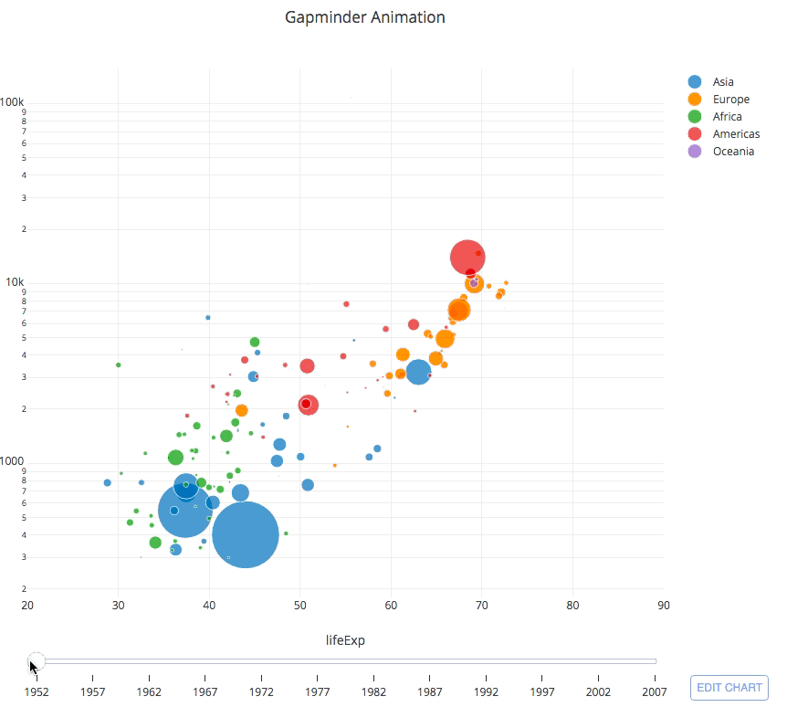

Летен семестар, 2020
- Ментор: Акад. Љупчо Коцарев
- Студенти: Филип Карафилоски, Кирил Зеленковски
Тема на проектот
Репродусибилна Jupyter книга за кратко истражување повразно со параметрите на SIR модел, нивното меѓусебно влијанието претставено со интерактивни графици, Curve Fitting за COVID-19 податоци за Италија.
Во последните неколку месеци, голем дел data scientists, ентузијасти и луѓе со слободно време почнаа да читаат за моделирање на заразни болести. Повеќето од статиите и обидите што кружат на Интернет се обидуваат директно, слепо да ги соодвестуваат моделите со бројот на случаеви на COVID19, без спознавање на теоријата и логиката позади самите модели.
Како тема за проектот се одлучивме да се обидеме да го истражиме феноменот и позадината зад моделирањето на заразни болести. SIR моделот со своите равенки и параметри ги објаснуваме слично на начинот на кој ние самите ги истражувавме со прости примери и Python Jupyter тетратки. Опфаќаме и елаборираме различни варијанти од класичниот модел, со додавање на нови компоненти и состојби како и едноставен обид за Curve Fitting за real-world податоци.
Проектот нуди:
Репродусибилност: Тетратките во книгата се комплетно репродусибилни во две инстанци:
- Binder (Linux container, повеќе за Binder)
- Google Colab тетратка
За Google Colab потребно е само gmail профил за Binder нема потреба од никакво поврзување.
Интерактивност: Книгата содржи голем број на интерактивни графици кои ја користат Python библиотеката Plotly, каде може да се манипулираат исходите на кривите со променување на иницијалните вредности со помош на лизгачи, мени со опции и временски зависни лизгачи.
Пример за интересна анимација на фигура изработена во Python:

Транспаретност: Ќелиите за код можат да се прошируваат при кликнување на "+", каде може да се следи кодот за секоја фигура, графикон.